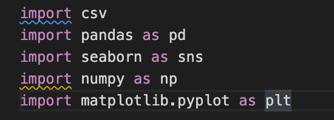
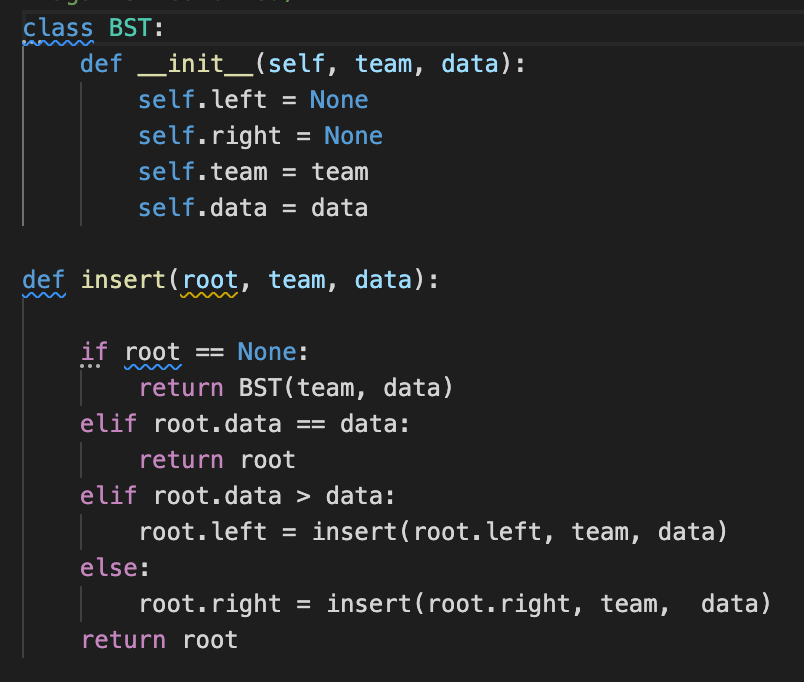

I wanted to analyze the two most recent World Cup(2018 and 2014) with the 2022 World cup looming this winter, but I wanted to compare the total # of goals scored in the 2018 World Cup to the total scored in 2014 to see the difference and what possibly could cause that difference. Each path during a World Cup run is different and I wanted to analyze the difference in 2014 and 2018!! In analyzing these two datasets, I looked through each dataset and looked at the variables named "Team, Goals For, and Goals Against. Using two data visualizations to compare the top total goals, which is goals for and goals against combined from the different years using two barplots.
The code below was implented to use all the different packages to allow me to create visualization for my data and to be able to convert the .csv files.
The 2014 dataset was approximately 1.07 Kilobyte encoded as a .csv file. I read the file line by line and decided to iterate through the csv_2014 file, and append the teams, goals for, goals against into list_2014 as a dictionary for speed optimization. I would open the csv_2014 file and use the csv.reader as an object and place them into a list as a dictionary. The 2018 dataset was approximately 1.03 Kilobyte encoded as a .csv file. I read the file line by line and did the same iteration for speed optimization and appending the variables that I am analyzing by putting them into list_2018 as a dictionary.
20142018I wanted to do something that made this a little tougher. The code demonstrated below is the creation of the BST to print out the top 5 teams with most total goals scored. (goals for and goals against combined)I used the binary search tree with the list_2014 and list_2018 code. I used a Binary Search Tree so that the elements also known as the variables in the parenthesis are sorted in order and can be looked through and replaced by a greater value if it is one.(The root is the highest valuable of the highest number of total goals scored.
Inorder code The code that is shown below is to print out the top 5 temas in order based off of the total goals scored(printing out the
numbers)in the two datasets that have been converted to lists. The Binary Search Tree printed these are the top 5 teams based off of total goals in both 2014 and 2018.After finishing the code and having the top 5 teams printed in both years I wanted to visualize both of the results with two seaborn barplots to compare and showthe difference in total number of goals and to make some inferences and ask some follow up questions.